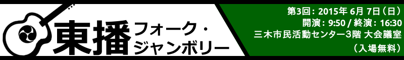
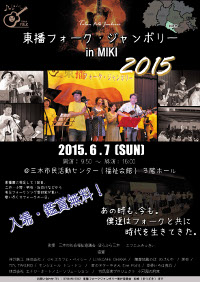
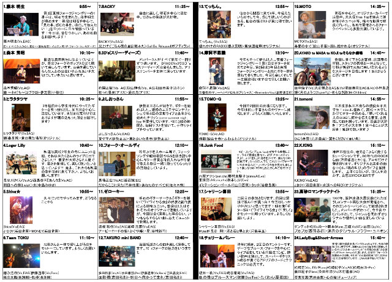
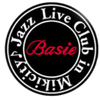
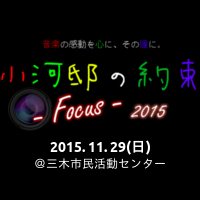
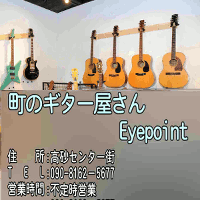
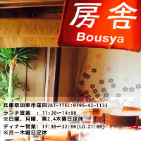
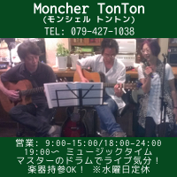

コンセプト
出演者リスト
会場案内（アクセス）
出演者へのお知らせ
協賛
主催者ブログ
お知らせ
(05/19)パンフレットを更新しました！
出演者リストを更新しております。ご確認ください。
(04/12)第３回東播フォークジャンボリーの開催日時、出演バンドが決定しました！
日時・会場は本サイトのトップ右上をご覧下さい。
第三回は、いくつかの初出場のバンドを含め２４組の参加になります。
入場無料、出入り自由ですので是非お越し下さい。
コンセプト
「東播フォークジャンボリー」はこんなイベントです
東播地区
（明石市・高砂市・加古川市・稲美町・播磨町・三木市・小野市）
を中心としたアマチュアフォーク音楽の祭典を目標としています。
東播地区のアマチュアフォーク音楽家が広く参加します。
演奏ジャンルはアコースティック系
（フォーク、ブルーグラス、ブルースなど）
です。
入場料は無料のイベントです。
フライヤー（チラシ）↓

出演者リスト・タイムテーブル
※クリックすると印刷用のPDFファイルが開きます。

会場案内（アクセス）
日時： 2015年06月07日（日） 10:00～16:30
会場：
三木市民活動センター（福祉会館） 3階大ホール
料金： 無料（入場・観覧とも）
大きな地図で見る
出演者へのお知らせ
直前ミーティングを行いますので出演バンド代表者はご参集下さい。
日時・・・5月24日(日) 10:00〜12:00
場所・・・三木市民活動センター 2階会議室
内容・・・当日の運用事項について（出演順・役割分担）、参加料の徴収、就職手配希望者の確認
オープニング、エンディング曲のコード譜を掲載しています。
2013年東播フォークジャンボリーでの演奏映像も合わせてご参照ください。
■ オープニング曲（うちのお父さん）
/
■ 演奏映像（2013年度）
■ エンディング曲（おもかげ色の空）
/
■ 演奏映像（2013年度）
協賛・リンク
＜フォーク・ジャンボリー先輩方＞
浜名湖フォークジャンボリー
西三河フォークジャンボリー
協賛・リンク
＜協賛＞
Jazz café Basie 
ecotool
小河邸の約束 
町のギター屋さん Eyepoint 
薩摩地鶏 わげんや
房舎 -ぼうしゃ- 
Moncher TonTon 
70's BAR TAKURO
Live Cafe Ohana
高砂いろは食品
株式会社エナジー・オートノミー・ソリューション
＜後援＞
エフエムみっきぃ
社会福祉法人 三木市社会福祉協議会
ボランタリー活動プラザみき
＜フォーク・ジャンボリー先輩方＞
浜名湖フォークジャンボリー
西三河フォークジャンボリー
昨年度以前のバージョン
第１回（2013年度 - 2013/06/09）
第２回（2014年度 - 2014/06/08）
{kind=link}